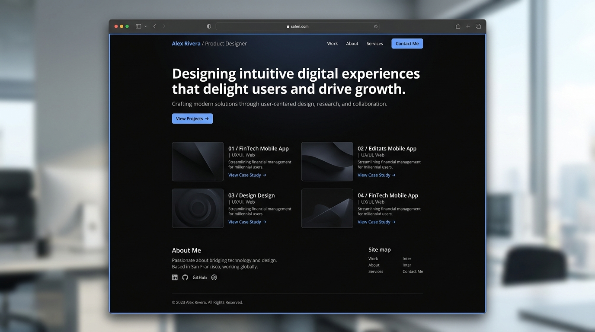
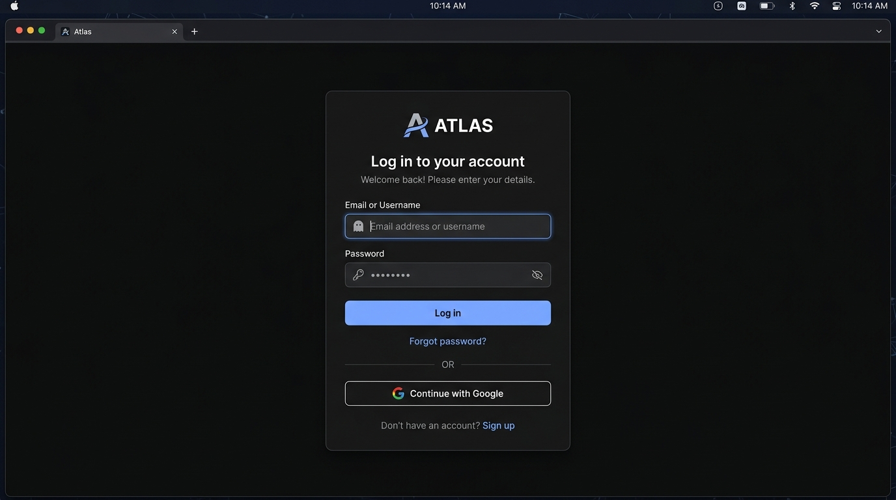
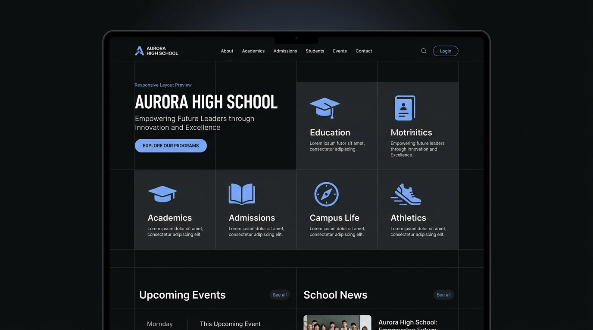

Personal Portfolio Website Preview
Purwokerto, Indonesia
•
PPLG Student
•
2026
Rayyan Amayuri
PPLG Student · Web Developer · UI/UX Learner
"Saya membangun website yang rapi, fungsional, dan terus saya kembangkan."
Saya sedang mendalami web development, UI/UX, dan teknologi digital melalui project, eksperimen, dan proses belajar langsung.
<status> learning_by_building </status>
v2.6
// 01
PROYEK
Pekerjaan
Beberapa project yang saya buat, eksperimen, dan pelajari.
PROJECT 01
Personal Portfolio Website
Website portfolio pribadi untuk menampilkan profil, kemampuan, dan project dalam satu halaman yang responsif.
HTML
Tailwind CSS
JavaScript
PROJECT 02
Login Page
Halaman login sederhana yang saya gunakan untuk mempelajari struktur HTML, styling, layout, dan interaksi dasar menggunakan JavaScript.
HTML
CSS
JavaScript

Login Page Preview
School Website Concept Preview
PROJECT 03
School Website Concept
Konsep website sekolah dengan fokus pada struktur informasi, visual hierarchy, responsive layout, dan pengalaman pengguna.
HTML
CSS
JavaScript
UI/UX
// 02
PROFIL
Tentang
Saya belajar dengan cara membuat sesuatu secara langsung. Saat menemukan bagian yang belum tepat, saya mencoba memahami penyebabnya, memperbaikinya, lalu mengulang proses tersebut. Pendekatan ini membantu saya memahami bukan hanya bagaimana sesuatu dibuat, tetapi juga kenapa sebuah keputusan digunakan.
Saat ini saya banyak menggunakan HTML, CSS, JavaScript, Git, GitHub, dan VS Code. Saya juga sedang memperdalam responsive design, UI/UX, serta penggunaan AI sebagai alat bantu dalam proses belajar dan pengembangan project.
Kemampuan & Alat Kerja
Web Development
- HTML
- CSS
- JavaScript
Tools
- Git
- GitHub
- VS Code
Design
- UI/UX
- Responsive Design
- Layout
- Visual Hierarchy
Creative Tech
- AI-assisted Development
// 03
TIMELINE
Perjalanan Belajar
2026
Mulai mendalami web development
2026
Membuat project HTML dan CSS
2026
Mulai mempelajari JavaScript
2026
Mengeksplorasi UI/UX dan responsive design
2026
Mulai menggunakan Git & GitHub
2026
Mengeksplorasi AI-assisted development
Di Luar Kode
Di luar coding, saya menikmati anime dan donghua, menonton film, berlatih silat, dan mengeksplorasi berbagai hal baru.
// 04
KONTAK
Mari berdiskusi.
Terbuka untuk berdiskusi, belajar bersama, atau mengerjakan sesuatu yang menarik.